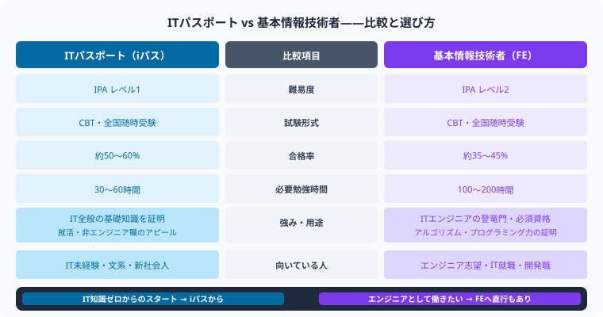
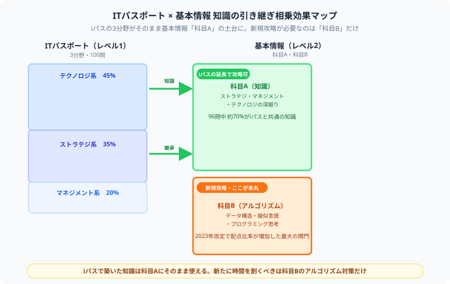

ITパスポート vs 基本情報技術者 どっちを先に取るべき？難易度・就職・勉強時間を徹底比較【2026年版】
こんにちは、大谷です！
僕は普段、公認会計士試験の勉強で財務諸表や税法とにらめっこしているんですが、実は会計士受験生こそITパスポートや基本情報みたいなIT資格をドッキングさせるべきだと本気で思っています。今の会計士・経理の現場はExcelマクロもクラウド会計もRPAも当たり前。数字と法律を武器にする者ほど、ITという「もう一つの共通言語」を持つと戦闘力が跳ね上がるんです。
今回は、そんな視点から「ITパスポートと基本情報、どっちを先に取るべきか」を、同じ受験生目線で本音で語ります！
記事の最後に僕からの応援メッセージもあるので、最後まで読んでもらえると嬉しいです！
「ITパスポートと基本情報技術者試験、どっちから受けるべき？」IT系の国家資格に挑戦しようとすると必ずぶつかる疑問です。どちらも経済産業省が実施するIT国家資格ですが、難易度・勉強量・就職評価は大きく異なります。本記事では文系・未経験者にもわかりやすく徹底比較します。

ITパスポート（IPA レベル1）と基本情報技術者（IPA レベル2）は目的と難易度が大きく異なります。自分のキャリア目標に合った資格を選ぶことが重要です。

図解のとおり、ITパスポートの3分野（テクノロジ系・ストラテジ系・マネジメント系）の知識は、基本情報の科目Aにそのまま相乗効果として活きます。新規に時間を割くべきは、2023年の試験改定で配点比率が増した科目Bの擬似言語・アルゴリズム対策だけ。攻略すべき敵の数が想像より少ないとわかれば、一気にハードルが下がりますよ。
ITパスポート・基本情報の基本情報比較
| 項目 | ITパスポート（iパス） | 基本情報技術者（FE） |
|---|---|---|
| レベル | レベル1（入門） | レベル2（初級） |
| 試験形式 | CBT（随時） | CBT（随時） |
| 出題数 | 100問（多肢選択） | 科学技術・アルゴリズム・言語など |
| 合格率 | 45〜55% | 20〜30% |
| 必要勉強時間 | 80〜100時間 | 200〜300時間 |
| 受験料 | 7,500円 | 7,500円 |
| 対象 | 社会人全般・文系 | エンジニア・IT職志望者 |
難易度比較：どちらが難しいか？
結論として基本情報技術者試験の方が大幅に難しいです。特にアルゴリズム・プログラミング分野はITパスポートには存在しない領域で、ここが合否を大きく左右します。
| 比較軸 | ITパスポート | 基本情報技術者 |
|---|---|---|
| アルゴリズム・プログラミング | なし | あり（必須・配点大） |
| 計算問題の難易度 | 低 | 中〜高 |
| 合格率 | 45〜55% | 20〜30% |
| 必要勉強時間 | 80〜100時間 | 200〜300時間 |
| 難易度判定 | ★★☆☆☆ | ★★★★☆ |
就職・転職での評価比較
どちらの資格も「IT知識の証明」として評価されますが、エンジニア職への転職では基本情報が圧倒的に有利です。
| シーン | ITパスポート | 基本情報技術者 |
|---|---|---|
| ITエンジニア・開発職への転職 | ★★☆☆☆（あると少し加点） | ★★★★☆（必須に近い） |
| 非IT職（文系一般職）での評価 | ★★★☆☆（ITリテラシーの証明） | ★★★☆☆ |
| 公務員試験での加点 | 一部自治体で加点 | 一部自治体で加点 |
| 大学単位認定 | 一部大学で単位認定 | 一部大学で単位認定 |
| IT企業の新卒採用評価 | ★★☆☆☆ | ★★★★☆ |
| 社内SE・情報システム部門 | ★★★☆☆ | ★★★★☆ |
文系・未経験者にはどちらがおすすめ？
ITパスポートをおすすめする人
- IT業界への転職は考えていないが、IT基礎知識を証明したい
- 文系職・事務職・営業職でDXやITツールを扱う機会が増えた
- まずIT系資格を1つ取って自信をつけたい
- 勉強時間が80〜100時間しか確保できない
基本情報技術者をおすすめする人
- エンジニア・SE・プログラマーへの転職を目指している
- IT業界で働いている（またはこれから入る）
- 応用情報・高度試験まで段階的にステップアップしたい
- プログラミングをしっかり学びたい
両方取るなら：ITパスポート→基本情報の順が王道
ITパスポートはIT全体の基礎概念（ストラテジ・マネジメント・テクノロジ）を網羅しています。ITパスポートで全体像を掴んでから基本情報に進むことで、基本情報のストラテジ・マネジメント系問題（全体の30%程度）を効率よく対策できます。
まとめ：ITパスポート vs 基本情報 どっちを選ぶ？
- 難易度：基本情報 ＞＞ ITパスポート（勉強時間は約3倍）
- エンジニア転職なら：基本情報一択（ITパスポートだけでは弱い）
- 非IT職・文系なら：ITパスポートで十分なケースも多い
- 両方取るなら：ITパスポート→基本情報の順で段階的に
- 転職市場での汎用性：基本情報の方が上（特にIT職）
数字と法律だけじゃない、ITという武器も手に入れよう
ITパスポートも基本情報も、最初は横文字だらけで心が折れそうになりますよね。でも会計士試験と同じで、範囲を分解して一つずつ倒していけば必ず攻略できます。特に基本情報の科目Bは最初の壁ですが、そこを越えた瞬間に「自分でロジックを組める」という一生モノの武器が手に入ります。僕も公認会計士試験と並行しながら全力で応援しているので、焦らず一歩ずつ進んでください。執筆のモチベーション維持のために、この下にある【いいねボタン】をポチッと押してもらえると、めちゃくちゃ嬉しいです！